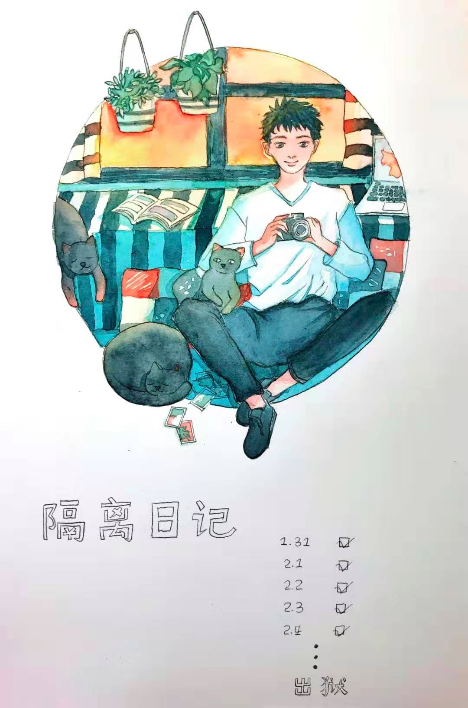
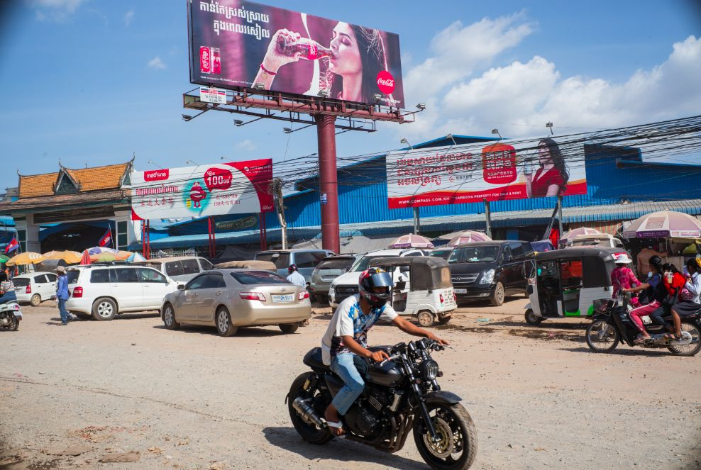
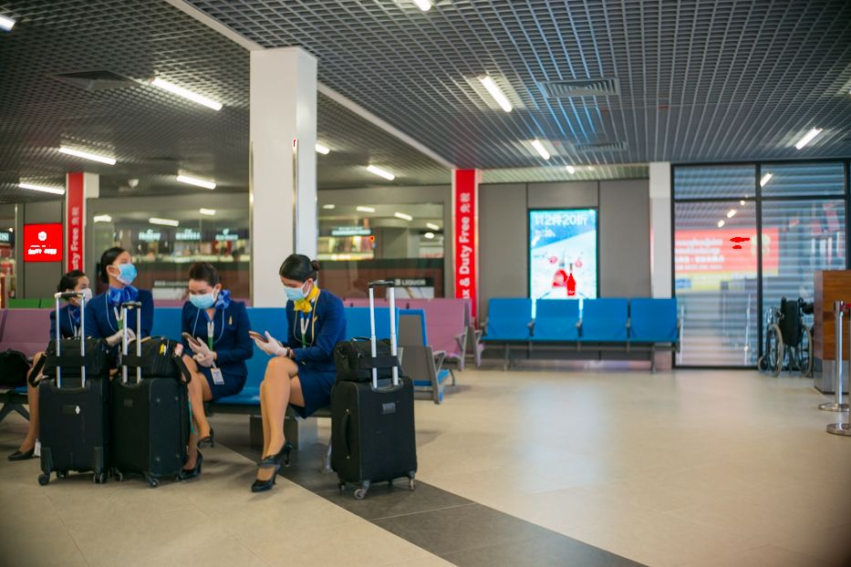

「 隔离日记 」 20200203
原文链接 备份链接 播放音乐 | 阅读效果更佳 感谢 | 您对霍超LEGAL的关注、阅读与分享 依据国务院2020年春节放假延长的通知，今天本应该是正式开始工作的日子，然而由于疫情的原因，全国多地的企业受地方政府的明确要求，只能继续暂停运 …
播放音乐 | 阅读效果更佳
感谢 | 您对霍超LEGAL的关注、阅读与分享

_特别感谢小吴同学，日记有了衍生周边2333
_
十分感人的是，在写日记的第五天，收到了小吴同学的漫画祝福，显得自己好像是在有猫、有狗、有光、有绿萝的舒适房间里，距离“出狱”也不要太久，日记还有了衍生周边2333。虽然残酷的现实是依旧孤身一人，面对窗外的冰冷黑暗，唯有偶尔一驶而过的汽车…但还是挺开心的。

真实的窗口，2020年2月4日
待在小屋子里仅有的一点娱乐，就是看看电脑手机，可又发现自己每天生活所面对的，与打开各种新闻客户端里喷薄而出的信息是不一样的，与打开朋友圈所看到的各种分享的各种信息不一样，与辛苦翻墙看到的异域世界还是不一样。
“为众人抱薪者，不可使其冻毙于风雪。为自由开道者，不可令其困厄于荆棘”。然而，感觉自己自己在这个小屋里，很快就过了那种看到一条疫情消息，就能喜极而泣或者愤懑不已的时段。自己的日子还得自己过，还不如多花些时间看几个有用的视频，更不如去在线上做个志愿者，直接去做一些帮助别人的事情，或者也在百无聊赖中，写点日常的琐事，消磨缓解一点情绪。
TED演讲：比尔·盖茨：下次的疫情暴发？我们还没准备好
再回想起，疫情中周遭环境的变化，从国内到国外，从松弛到紧张，自己也多多少少用相机、用手机记录下了隔离前的每天里，周遭不同环境下的一各色百态，拍摄的时候虽然并没有特别什么计划，但是现在静下来梳理看看，每天都有那么一幕印象深刻。
这段旅程经历如梦似幻，如今可以继续安心修图了 Orz
2020年1月23日，机场里戴口罩的人们
2020年1月24日，西哈努克港某大型娱乐场所
2020年1月25日，吴哥窟里遇到印度舞者

_2020年1月26日，炙热阳光下的狗_

_2020年1月27日，西港大市场门前的“可口可乐”广告_
 2020年1月28日，西哈努克港的街头戴口罩的人
2020年1月28日，西哈努克港的街头戴口罩的人

__2020年1月30日，西哈努克机场戴口罩的空姐

__2020年1月30日，进入隔离区之前的最后一张照片
查看 往日
—End—
文 | 霍超
插曲 | 《Colourful Days》- 朴树
文首漫画 | 吴悦
封面插图 | 霍超
正文摄影 | 霍超
封底视频 | Every Leica has a Soul
长按二维码
关注 | 公众号

点 在看 留下你的印记
谢谢一路有你＼( ^▽^ )／
Huochao
谢谢支持！
长按二维码向我转账
谢谢支持！
受苹果公司新规定影响，微信 iOS 版的赞赏功能被关闭，可通过二维码转账支持公众号。
原文链接 备份链接 播放音乐 | 阅读效果更佳 感谢 | 您对霍超LEGAL的关注、阅读与分享 依据国务院2020年春节放假延长的通知，今天本应该是正式开始工作的日子，然而由于疫情的原因，全国多地的企业受地方政府的明确要求，只能继续暂停运 …
原文链接 备份链接 播放音乐 | 阅读效果更佳 感谢 | 您对霍超LEGAL的关注、阅读与分享 昨天飞机刚刚落地，手机开机给爸妈报了平安，人们开始涌动，起来从行李架上收拾东西，飞机上的广播突然响起，”乘坐本次航班的旅客 霍超先生，因为您先 …
原文链接 备份链接 播放音乐 | 阅读效果更佳 感谢 | 您对霍超LEGAL的关注、阅读与分享 如今我每天蜗居在隔离房间里，都会定时看一些疫情相关的新闻，笑着看的时候看看看着就哭了；哭着看的时候，看着看着就笑 …
原文链接 备份链接 播放音乐 | 阅读效果更佳 感谢 | 您对霍超LEGAL的关注、阅读与分享 昨天，许多关心和关注我的人看到推送，给予我鼓励和安慰，收到祝福的消息太多，以至于一时让我有些手足无措，没能及时回复还望谅解，在此必须再说一句感 …
原文链接 备份链接 编者按 这篇约稿来自一名化名为“平安”的武汉大学生，记述了她从返乡、封城，再到过年所经历的种种。这个特殊的春节，绝望与希望同在，寂静与喧嚣并存。身处「风暴中心」，她的心理有什么样的变化？让我们一起来看看她的五日。 “ …